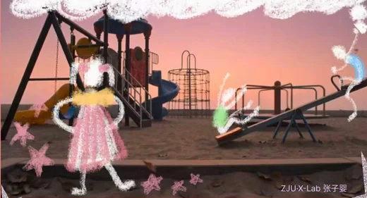
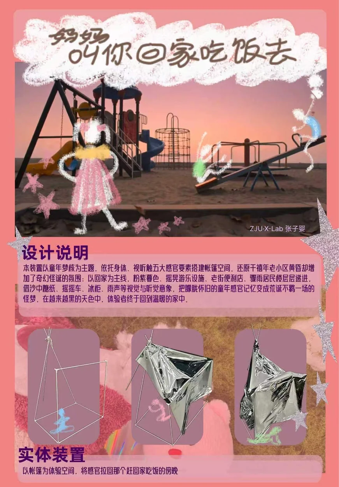

D07 / 设计团队 · 实体展示
回家核

设计说明
本装置以童年梦核为主题，依托身体、视听触五大感官要素搭建帐篷空间，还原干禧年老小区黄昏却增加了奇幻怪诞的氛围：以回家为主线，粉紫暮色.摇晃游乐设施、老街便利店、骤雨居民楼层层递进.
借沙中糖纸、摇摇车、冰柜.雨声等视觉与听觉意象，把朦胧怀旧的童年感官记忆变成荒诞不羁一场的圣梦，在越来越黑的天色中，体验者终于回到温暖的家中

 返回设计项目索引
返回设计项目索引
设计说明
本装置以童年梦核为主题，依托身体、视听触五大感官要素搭建帐篷空间，还原干禧年老小区黄昏却增加了奇幻怪诞的氛围：以回家为主线，粉紫暮色.摇晃游乐设施、老街便利店、骤雨居民楼层层递进.
借沙中糖纸、摇摇车、冰柜.雨声等视觉与听觉意象，把朦胧怀旧的童年感官记忆变成荒诞不羁一场的圣梦，在越来越黑的天色中，体验者终于回到温暖的家中
